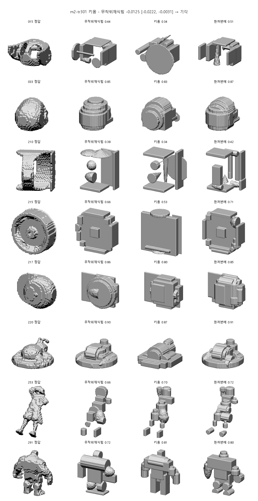

m2-tr301 키워 맞추기 — 보고
분석
한 줄로
물음: 몸 12 개 · 걸음 · 일정은 그대로 두고, 몸을 「아직 덜 덮인 가장 큰 덩이에 하나씩」 놓으면 몸 합치기 천장이 오르나?
답: 아니다. 오히려 내려갔다. 키움 0.7406 대 무작위재식힘 0.7531, 차 −0.0125(구간 −0.0222 ~ −0.0031). 구간 위 끝이 0.01 아래라 m2-H54 기각 — 이 키움 절차로는 안 오른다.
왜 이 실험을 했나
tr293 에서 옛 어휘 몸 12 개를 정답 복셀에 맞춘 천장이 0.749 였다. 새 몸(타원체 · 캡슐)을 넣어도 거의 안 올랐다. 사용자 가설 H53 은 「형태는 잡히는데 CAD 로 표현할 길이 없다」였고, 문헌을 모아 법칙을 세워 보니(법칙 L7) 같은 어휘라도 맞추는 절차가 결과를 크게 바꾼다고 했다. 그래서 표현을 바꾸기 전에 맞추기부터 바꿔 봤다. 우리 목표는 view 모음 → CAD code 이고, 이 실험은 그 출력 쪽 천장만 잰다.
바꾼 것 하나
몸을 처음 놓는 자리. 무작위재식힘은 무작위 자리에서 몸 12 개를 다 켜고 시작한다. 키움은 비어 있는 데서 시작해, 아직 안 덮인 가장 큰 덩이에 몸 하나를 놓고 다듬기를 12 번 되풀이한다. 다듬기 일정(100 걸음 × 12 번 + 마무리 150), 모델 하나당 걸음 1,350, 옛 어휘, 복셀 48³, 연습 300 은 둘이 같다.
결과

| 키움 | 무작위재식힘(대조) | 지지 문턱 | 넘었나 | |
|---|---|---|---|---|
| 평균 복셀 IoU | 0.7406 | 0.7531 | 차 ≥ 0.02 · 구간 아래 > 0 | 아니오 · 기각(위 < 0.01) |
| 최악 5 % | 0.277 | 0.397 | — | — |
| 켜진 몸 수 | 11.94 | 11.73 | — | — |
복셀 IoU 는 정답과 맞춘 모양을 48³ 칸으로 바꿔 겹친 칸 몫. 정보 없이 둘러싼 상자는 0.302, 볼록 껍질은 0.555 였다.
왜 이렇게 나왔나
확인한 것
- 몸을 덜 써서가 아니다. 켜진 몸 수는 키움 11.94, 무작위재식힘 11.73 으로 키움이 더 많다.
- 평균보다 나쁜 쪽이 크게 무너졌다. 최악 5 % 가 0.397 에서 0.277 로 0.12 내려갔다.
- 키움은 tr293 셋 최대(0.749)와도 차 −0.0081 로 넘지 못했다.
짐작 (아직 확인 안 함)
- 그림에서 키움은 첫 몸이 물체 전체를 덮는 판 · 원판이 된다(215 바퀴 0.53 대 0.66, 015 0.34 대 0.44). 첫 덩이가 물체 전체라 몸 하나가 물체만 한 크기로 놓이고, 뒤 다듬기에서 줄지 않는 것 같다. 첫 몸 크기를 세 보지 않았다.
사후 관찰 · 판정 아님
- 같이 돌린 한꺼번에(과녁을 k-평균 12 덩이로 나눠 몸 12 개를 한 번에 놓음)는 0.7801, 무작위재식힘보다 +0.027(구간 0.022 ~ 0.032). 미리 세운 가설이 아니라 법칙 L7 의 근거로 세지 않는다. 새 카드 후보로만 둔다.
한계
- 연습 300 · 한 번만 돌림. 무작위재식힘은 출발 하나라 출발 운이 섞인다(tr293 출발끼리 sd 0.058).
- 맞추기가 정답 3D 를 쓴다 — 천장이지 배포 경로가 아니다. 48³ 복셀은 얇은 부분 차를 덜 본다(법칙 L10).
- 배관(합성 32 개 되맞춤)에서도 키움만 0.883 으로 다른 팔(0.894)보다 낮았다. 통과선 0.85 는 넘었다.
- 배관 통과 조건이 버그 고침 때 「두 팔 ≥ 0.85」 에서 「tr293 셋 최대 포함 다섯 모두 ≥ 0.85」 로 엄격해졌다(계획 「검토 뒤 고침」 ed9f5a60). 결과에는 영향 없음.
- 법칙 L7 의 반증 문장(「잔차 하나씩 − 무작위 출발 셋 구간 위 < 0.01」)은 숫자로는 맞아떨어진다: 키움 − tr293 셋 최대 −0.0081(구간 위 0.0). 하지만 tr293 셋은 일정이 다르고(같은 일정 아님) 카드에서 판정식이 아니라 같이 적은 값이다. 그래서 반증 확정이 아니며, 반증으로 셀지는 사용자가 정한다.
- 기각 범위는 이 키움 절차까지다. 맞추기 일반이나 표현 천장에 대해서는 말하지 않는다.
배운 것과 다음
덜 덮인 곳에 하나씩 키우는 이 절차는 몸 합치기 천장을 올리지 못했고, 나쁜 물체를 더 나쁘게 만들었다.
카드 결정(기각)대로 다음은 사용자와 고른다. 후보만 적는다:
- 다른 맞추기 — 이산 탐색 · 국소해 탈출.
- 몸 수(법칙 L6).
- 한꺼번에 사후 관찰을 미리 등록한 카드로 확인.
검토 (11-24 맥락 없는 서브 에이전트 · 카드 · 잼 · 보고 · 결과.png · 키움301.py 만 봄)
판정 「기각」 은 카드 판정식 · 결정 표대로이고 공정하다. 두 팔은 몸 12 · 일정 · Adam · 온도가 같고, 부트스트랩은 모델째 짝지은 차다. 숫자는 잼 · 그림과 맞는다. 판정이 바뀌는 지적은 없고, 글 고침 지적 다섯(아래)과 사소한 것 넷이 나왔다.
고친 줄 (위 분석 글은 그대로 둠)
- 한꺼번에 꼬리표 — 「사후 관찰」 이 틀렸다. 카드의 대조 · 재는법에 「한꺼번에 − 무작위재식힘」 이 같이 재는 값으로 미리 등록돼 있었다. 바른 꼬리표는 「미리 등록 · 판정 아님(같이 적은 값)」. 법칙 L7 의 근거나 맞힘으로 세지 않는 것은 같다.
- 한꺼번에 +0.027 은 일정이 다른 짝 — 한꺼번에는 1,200 + 150 을 한 번에, 무작위재식힘은 100 × 12 재식힘이다. 일정까지 같은 짝은 무작위긴이고 그 차의 구간은 재지 않았다. 무작위긴 − 무작위재식힘이 −0.0133 이라 일정 효과가 섞여 있다. 다시 볼 카드는 무작위긴을 주 대조로 걸어야 한다.
- 그림 캡션은 짐작 — 「첫 몸 하나가 큰 판 · 원판으로 물체를 덮는다」 는 아래 「짐작」 과 같은 말이다. 고른 8 개 중 둘(253 · 291)은 키움이 이긴다.
- 「몸을 덜 써서가 아니다」 는 너무 셈 — 잰 것은 켜진 몸 수뿐이다(아주 작게 줄어든 몸도 켜짐으로 셈). 확인한 것은 「켜진 수는 비슷하다」 까지다.
- 왜 — 코드에서 읽은 사실과 확인 안 한 설명을 나눔
- 코드 사실: 키움은 첫 몸을 가장 큰 연결 성분의 둘러싼 상자 크기로 놓는다. 물체가 한 덩이면 첫 몸 = 물체 상자다. 다음 몸을 놓을 때도 덜 덮인 칸만 보고 넘친 칸(가짜)은 보지 않는다.
- 확인 안 함: 그래서 첫 몸이 넘친 것을 뒤 몸 · 다듬기가 못 고치고 최악 5 % 가 무너진다. 다듬기에서 첫 몸이 줄지 않는지는 세지 않았다.
- 바꾼 것은 엄밀히 둘 — 키움 · 한꺼번에는 몸 종류 시작값도 고르게(0) 두고, 무작위 팔은 무작위값이다. 키움은 뒤에 놓인 몸일수록 다듬는 걸음이 적다(절차에 원래 들어 있음).
- 출발 운 sd 0.058 은 모델 하나 기준 — 300 개 평균의 흔들림은 그보다 훨씬 작고 짝지은 부트스트랩에 일부 들어 있다. 판정을 흔들 크기가 아니다. 한계는 「대조가 출발 하나 · 한 번」 으로 읽는다.
- 빠진 한계
- 연습 300 은 같은 검색어 물체가 묶여 있어(penguin 7 등) 서로 독립이 아니다. 모델째 부트스트랩 구간이 조금 좁을 수 있다.
- 본 실행은 PC 꺼짐 뒤 GPU 둘로 다시 돌렸고 묶음마다 저장 · 이어 돌기를 넣었다(3387684d). 「같은 계산」 은 연기 시험(차 0.0)으로만 확인했다.